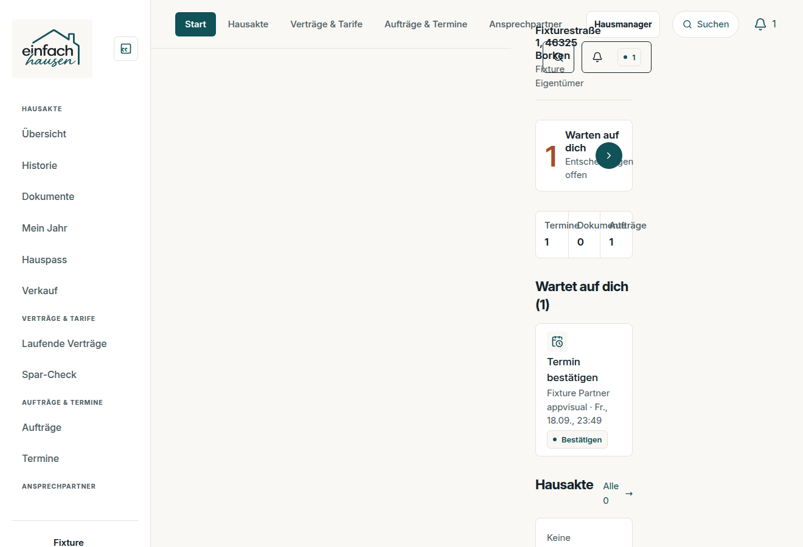
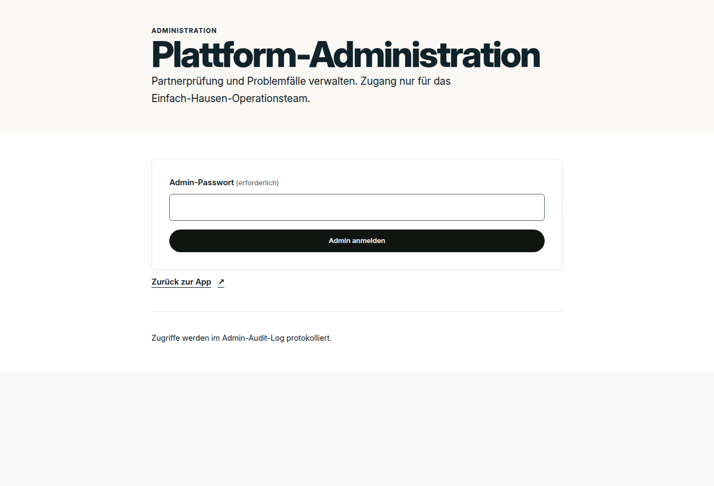

vergleich.htmlDie Soll-Vorschau wurde gegen die Sicherung, gegen das Designsystem und im echten Browser geprüft. Jeder Befund hat eine Messung oder ein Bild als Beleg. Keine Behauptung ohne Nachweis.
Das ist die Stelle, die dir aufgefallen ist. Die Hauptmenüpunkte schieben sich über den Nutzerblock,
der Hauptbereich ist leer. Das war der Stand vor 8f20654 (02:05), der das Hauptmenü
in eine eigene Zeile holte.

Belegt über Prüfsummen: zwei Bildpaare sind byte-identisch.
| Paar | Größe | Bedeutung |
|---|---|---|
admin_admin__desktop.png = admin_admin_ops__desktop.png | 42 KB | Beide zeigen die Anmeldeseite, nicht die Verwaltung |
owner_app_messages__desktop.png = owner_app_partners__desktop.png | 116 KB | Eine der beiden Seiten wurde nie aufgenommen |

20b41fa).Über der Vorschau steht: „darunter ein HTML-Entwurf mit den richtigen Tokens und Icons." Zwei Tokens stimmen nicht:
| Entwurf | Designsystem | Urteil |
|---|---|---|
--r-pan: 10px | --eh-radius-panel: 0.5rem = 8px | weicht ab |
--shadow-card: 0 1px 2px …, 0 4px 12px … | --eh-shadow-card: 0 2px 10px … | weicht ab |
--rail: #f7f5f0 | existiert nicht | erfunden |
--page: #f2f0ea | existiert nicht | erfunden |
--paper #faf8f4, --petrol #105258, --ink #10222a, --line #e4e2dc | identisch | stimmt |
Geprüft wurden alle 17 Tokens des Entwurfs gegen packages/eh-design/src/tokens.css.
| Schriftfamilie | Grundgröße | |
|---|---|---|
| Entwurf | -apple-system, BlinkMacSystemFont, "Segoe UI", … | 14 px |
| App | Inter (--eh-font-family) | 17 px (--eh-font-body) |
Der Entwurf fällt auf die Systemschrift zurück, die App nutzt Inter. Eine Vorschau in einer anderen Schrift kann die App nie treffen — das ist die Ursache des Eindrucks „verschiedene Schriftarten".
Im Entwurf steht oben fett „Verwaltung" und darunter klein „einfach hausen". Bei allen anderen fünf Entwürfen ist es umgekehrt: erst der Name, darunter der Zusammenhang.
Die Prüfung scripts/eh-design-check.mjs auf die Vorschauseite angewendet:
Die Schriftgrößen reichen bis 9,5 px hinunter (9,5 / 10 / 10,5 / 11 / 11,5 / 12 / 12,5 px).
Die kleinste Stufe des Designsystems ist --eh-font-meta = 13 px. Die Vorschau
unterschreitet sie 51-mal.
Das ist derselbe Maßstab, den die App selbst erfüllen muss. Die Vorschau würde ihn nicht bestehen.
| Fensterbreite | Ergebnis |
|---|---|
| 1440 px | sauber |
| 1120 px | sauber |
| 1024 px | sauber |
| 900 px | Tabelle schiebt sich unter die rechte Spalte, Text wird abgeschnitten |
| 390 px | Seite 471 px breit bei 390 px — 217 Elemente ragen heraus |
Nach dem Namen in der Kopfleiste steht ein ▾-Zeichen („Dropdown"), zu dem es kein Menü gibt.
Es erscheint in allen sechs Entwürfen und wirkt wie ein verirrtes Zeichen.
div 194/194, main 6/6, table 3/3).